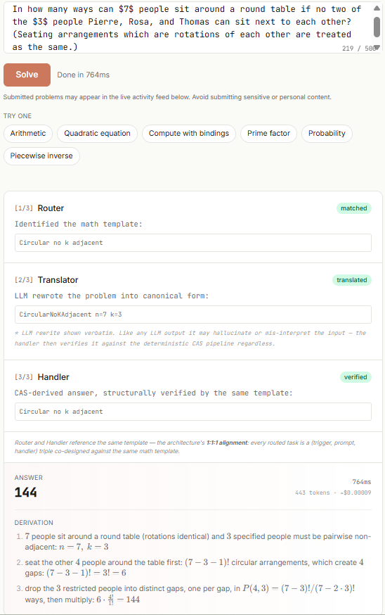

Handlers export derivations as Lean 4 theorems; 445 theorems from 479 task files are kernel-checked with Mathlib, with no sorry or axioms.
Abstract
We present Moxia (formerly AXIOM), a trust-first neuro-symbolic architecture for self-explaining mathematical reasoning over natural-language input. Its language model is strictly a canonicalizer: it rewrites informal problem text into a narrow schema consumed by a deterministic Computer-Algebra-System (CAS) pipeline, which derives and verifies the answer or abstains as a first-class output. Routing follows a 1:1:1 alignment of problem-shape regex, schema-specific prompt, and closed-form CAS handler, with 4,783 routes shipped, 71% of which answer without invoking the language model, and zero LOST_CORRECT regressions as a standing release gate. Because the answer is derived rather than generated, so is its explanation: every handler emits a step trace of the computation it performed, rendered as prose by a layer covering all 4,785 task files that cannot narrate a step the handler did not take. Derivations export to Lean 4 as well: 479 task files (10%) emit a theorem from the problem's declared data, 445 accepted by the Lean kernel with Mathlib; that gate covers a fixture corpus, so live output is generated, not machine-checked. We report two numbers and never fuse them. On the full 7-category MATH test split, designed against, Moxia answers 90.2% (4,510/5,000) with one confident-wrong answer (99.98% trust on parseable). On held-out MATH-500, never designed against, it answers 89.2% (446/500) with zero confident-wrong answers. The 1.0 pp gap is the substantive result: a registry that had merely memorized problem shapes would collapse on held-out data, and this one does not. The rule-only path answers the 20,000-record lm-eval arithmetic benchmark at 100%, 1 ms per record. What we emphasize is not an accuracy figure but the forward dynamic: every logged abstain is a candidate correct after one ship cycle, since new tasks compose without regressing the registry.
Problem
LLM answers to math problems offer no way to verify them: a confident-wrong answer looks the same as a correct one. Lean-based provers do verify, but they need problems pre-formalized in Lean syntax, which is a bottleneck for natural-language input.
Approach
Moxia uses an LLM only to rewrite informal problem text into a narrow, task-specific schema. A deterministic SymPy CAS handler then derives and verifies the answer, or abstains with a structured fail-reason. Routing follows a 1:1:1 alignment of regex trigger, schema prompt, and handler across 4,783 routes, and 71% of routes need no LLM call. Handlers emit step traces rendered as prose, and a per-task exporter emits a Lean 4 theorem stating the problem data and the handler's answer.

Figure 1: Single-query trace from the production demo on a circular seating problem: in how many ways can 7 people sit around a round table if no two of Pierre, Rosa and Thomas are adjacent? The three numbered pipeline stages (Router, Translator, Handler), followed by the answer and its derivation, materialize the 1{:}1{:}1 alignment of Section 2.1 : Router and Handler name the same Circular no k
Results
On the full MATH test split, Moxia answers 90.2% (4,510/5,000) correctly with one confident-wrong answer; this split was designed against. On held-out MATH-500 it answers 89.2% with zero confident-wrong answers, and it scores 100% on the lm-eval arithmetic suite. For Lean, 479 task files (10%) produce 445 theorems that the Lean 4 kernel accepts with Mathlib, but this check covers a fixture corpus, so live output is not machine-checked.
Domain
N
Correct
Trust on parse
Intermediate Algebra
903
97.45%
99.89%
Number Theory
540
91.85%
100.00%
Algebra
1187
90.82%
100.00%
Geometry
479
83.51%
100.00%
Cumulative
5000
90.20%
99.98%
Moxia per-domain results on the MATH test split (subset)